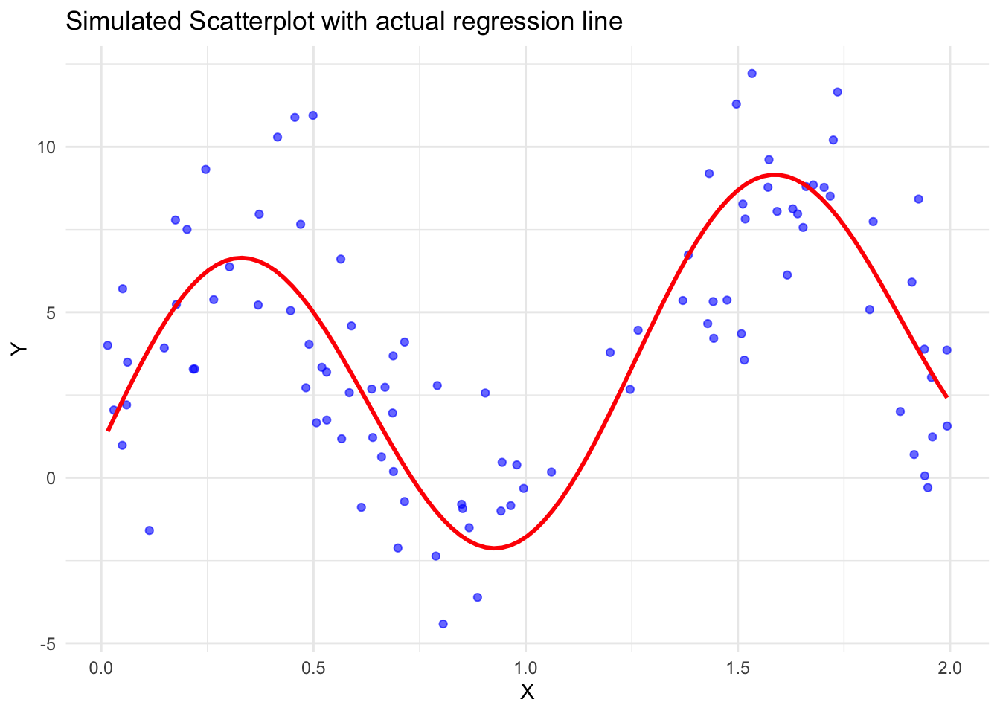
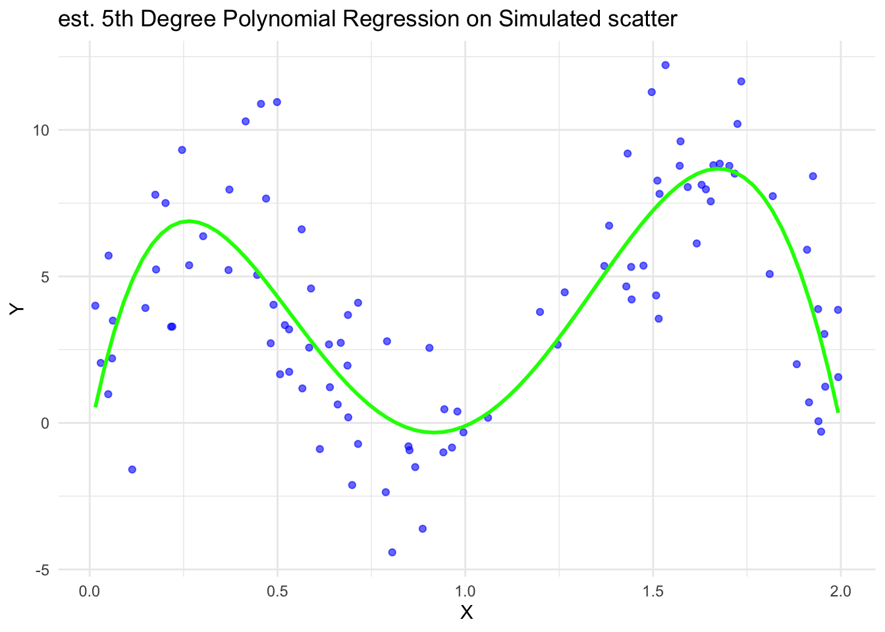
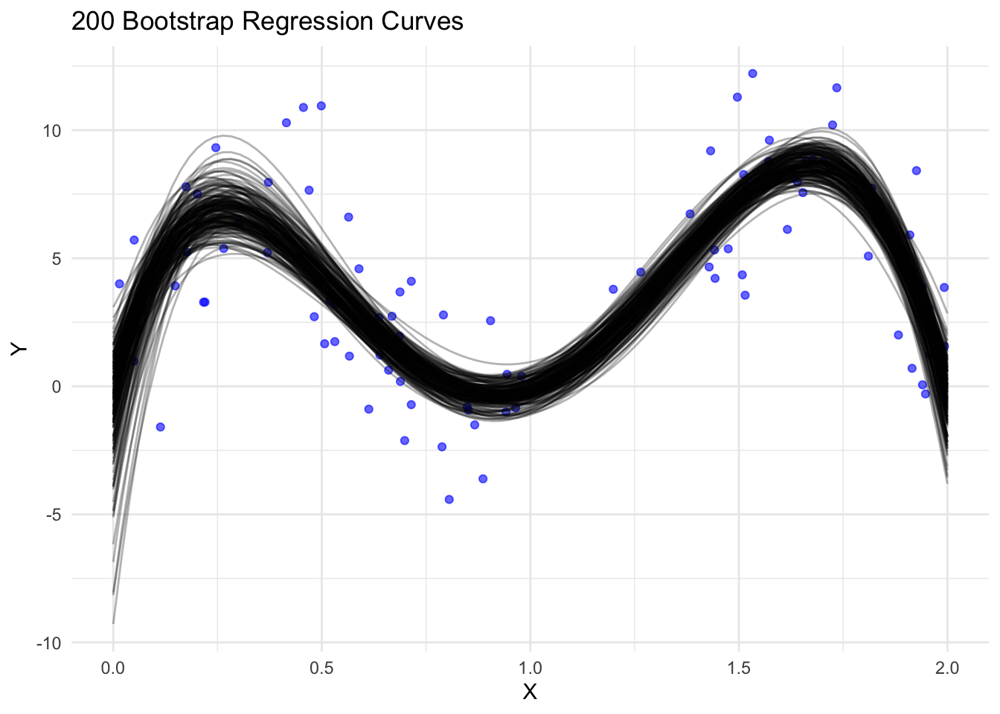
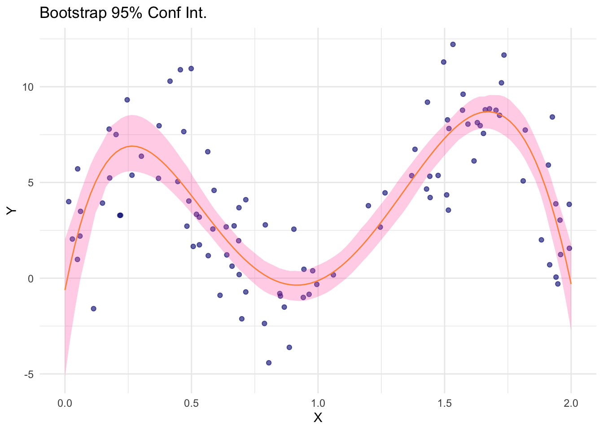
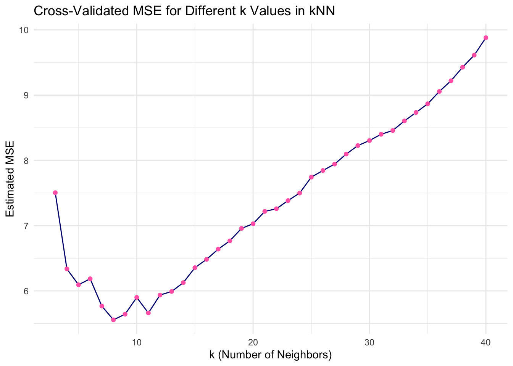
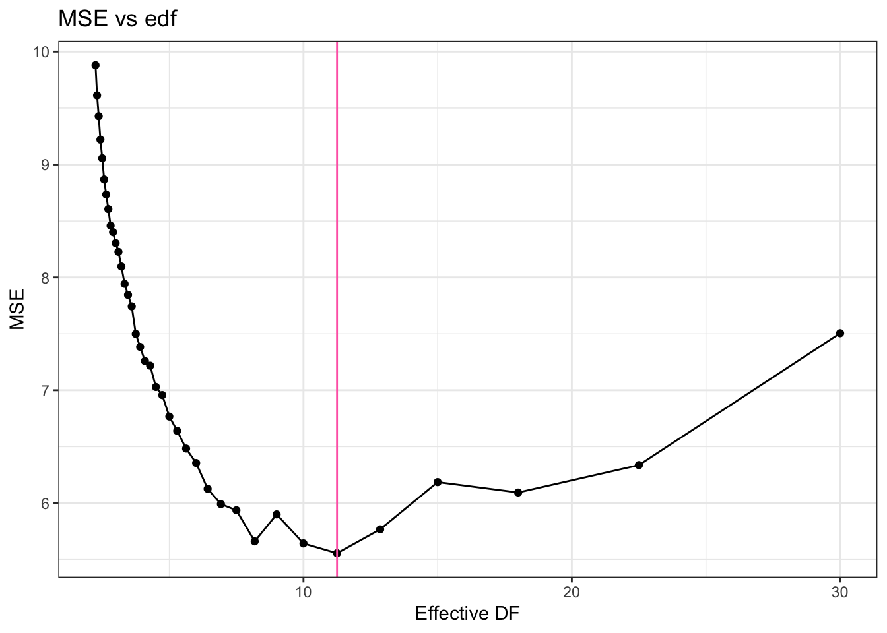
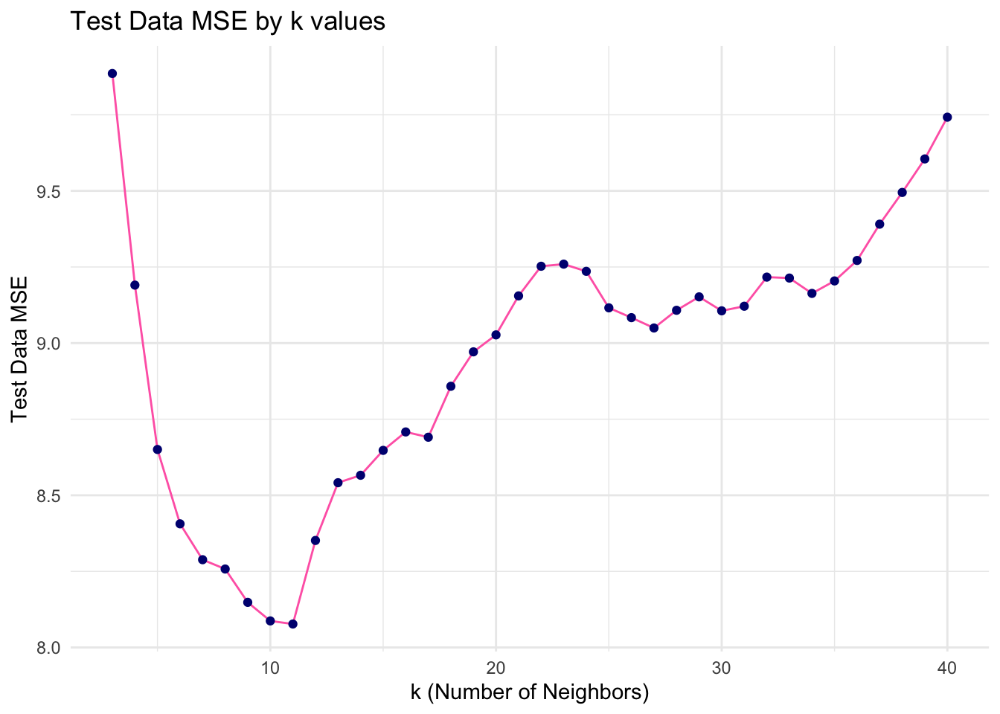
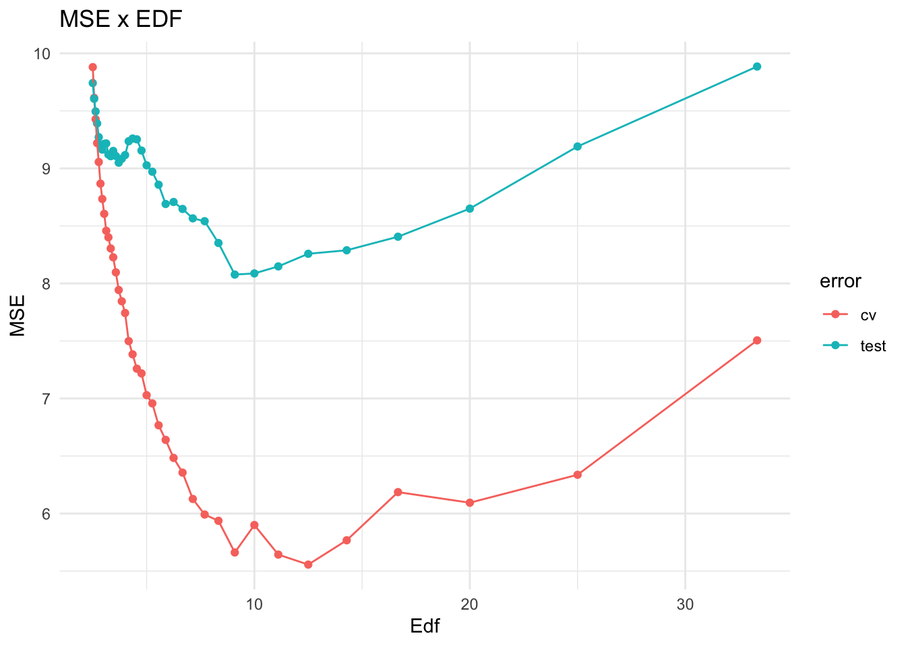
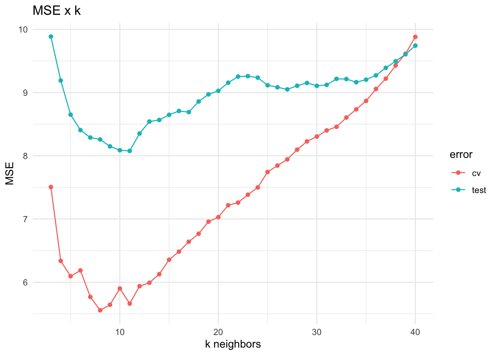

data_dir = 'https://mdporter.github.io/teaching/data/' # data directory
library(tidymodels)# for optional tidymodels solutions
library(tidyverse) # functions for data manipulation
library(caret)
library(tibble)
library(dplyr)Homework #2: Resampling
Required R packages and Directories
Problem 1: Bootstrapping
Bootstrap resampling can be used to quantify the uncertainty in a fitted curve.
a. Data Generating Process
Create a set of functions to generate data from the following distributions: \[\begin{align*} X &\sim \mathcal{U}(0, 2) \qquad \text{Uniform between $0$ and $2$}\\ Y &= 1 + 2x + 5\sin(5x) + \epsilon \\ \epsilon &\sim \mathcal{N}(0,\, \sigma=2.5) \end{align*}\]
Solution
x_func <- function(n_samps) {
runif(n_samps, min = 0, max = 2)}
err_func <- function(n_samps, st_dev = 2.5) {
rnorm(n_samps, mean = 0, sd = st_dev)}
y_func <- function(x, error) {
1 + 2 * x + 5 * sin(5 * x) + error}
all_func <- function(n_samps) {
x <- x_func(n_samps)
error <- err_func(n_samps)
y <- y_func(x, error)
tibble(x = x, y = y)}
n_samps <- 100
gen_data <- all_func(n_samps)b. Simulate data
Simulate \(n=100\) realizations from these distributions. Produce a scatterplot and draw the true regression line \(f(x) = E[Y \mid X=x]\). Use set.seed(211) prior to generating the data.
Solution
n_samps <- 100
set.seed(211)
gen_data <- all_func(n_samps)
actual_line <- function(x) {
1 + 2 * x + 5 * sin(5 * x)}
ggplot(gen_data, aes(x = x, y = y)) +
geom_point(color = "blue", alpha = 0.6) +
stat_function(fun = actual_line, color = "red", size = 1) +
labs(title = "Simulated Scatterplot with actual regression line",
x = "X", y = "Y") +
theme_minimal()Warning: Using `size` aesthetic for lines was deprecated in ggplot2 3.4.0.
ℹ Please use `linewidth` instead.
c. 5th degree polynomial fit
Fit a 5th degree polynomial. Produce a scatterplot and draw the estimated regression curve.
Solution
polynomodel <- lm(y ~ poly(x, 5), data = gen_data)
ggplot(gen_data, aes(x = x, y = y)) +
geom_point(color = "blue", alpha = 0.6) +
stat_smooth(method = "lm", formula = y ~ poly(x, 5), color = "green", se = FALSE, size = 1) +
labs(title = "est. 5th Degree Polynomial Regression on Simulated scatter",
x = "X", y = "Y") +
theme_minimal()
d. Bootstrap sampling
Make 200 bootstrap samples. For each bootstrap sample, fit a 5th degree polynomial and make predictions at eval_pts = seq(0, 2, length=100)
- Set the seed (use
set.seed(212)) so your results are reproducible. - Produce a scatterplot with the original data and add the 200 bootstrap curves
Solution
eval_pts <- seq(0, 2, length = 100)
bs_preds <- list()
set.seed(212)
for (i in 1:200) {
bs_samp <- gen_data %>% sample_frac(replace = TRUE)
bs_model <- lm(y ~ poly(x, 5), data = bs_samp)
bs_preds[[i]] <- tibble(
x = eval_pts,
y = predict(bs_model, newdata = tibble(x = eval_pts)), bs_sample = i)}
preds <- bind_rows(bs_preds)
ggplot(gen_data, aes(x = x, y = y)) +
geom_point(color = "blue", alpha = 0.6) +
geom_line(data = preds, aes(x = x, y = y, group = bs_sample),
color = "black", alpha = 0.3) +
labs(title = "200 Bootstrap Regression Curves",
x = "X", y = "Y") +
theme_minimal()
e. Confidence Intervals
Calculate the pointwise 95% confidence intervals from the bootstrap samples. That is, for each \(x \in {\rm eval\_pts}\), calculate the upper and lower limits such that only 5% of the curves fall outside the interval at \(x\).
- Remake the plot from part c, but add the upper and lower boundaries from the 95% confidence intervals.
Solution
ci_preds <- bind_rows(bs_preds, .id = "bs_sample") %>%
group_by(x) %>%
summarize(
y_lower = quantile(y, 0.025),
y_upper = quantile(y, 0.975),
y_mean = mean(y)
)
ggplot(gen_data, aes(x = x, y = y)) +
geom_point(color = "navy", alpha = 0.6) +
geom_line(data = ci_preds, aes(x = x, y = y_mean), color = "orange") +
geom_ribbon(data = ci_preds, aes(x = x, y = NULL, ymin = y_lower, ymax = y_upper),
fill = "hotpink", alpha = 0.3) +
labs(title = "Bootstrap 95% Conf Int.",
x = "X", y = "Y") +
theme_minimal()
Problem 2: V-Fold cross-validation with \(k\) nearest neighbors
Run 10-fold cross-validation on the data generated in part 1b to select the optimal \(k\) in a k-nearest neighbor (kNN) model. Then evaluate how well cross-validation performed by evaluating the performance on a large test set. The steps below will guide you.
a. Implement 10-fold cross-validation
Use \(10\)-fold cross-validation to find the value of \(k\) (i.e., neighborhood size) that provides the smallest cross-validated MSE using a kNN model.
- Search over \(k=3,4,\ldots, 40\).
- Use
set.seed(221)prior to generating the folds to ensure the results are replicable. - Show the following:
- the optimal \(k\) (as determined by cross-validation)
- the corresponding estimated MSE
- produce a plot with \(k\) on the x-axis and the estimated MSE on the y-axis (optional: add 1-standard error bars).
- Notation: The \(k\) is the tuning paramter for the kNN model. The \(v=10\) is the number of folds in V-fold cross-validation. Don’t get yourself confused.
Solution
k_vals <- 3:40
train_control <- trainControl(method = "cv", number = 10)
knn_model <- train(
y ~ x, data = gen_data,
method = "knn",
tuneGrid = data.frame(k = k_vals),
trControl = train_control,
metric = "RMSE"
)
set.seed(221)
optimal_k <- knn_model$bestTune$k
optimal_mse <- min(knn_model$results$RMSE^2)
cat("Optimal k:", optimal_k, "\n")Optimal k: 8 cat("Estimated MSE:", optimal_mse, "\n")Estimated MSE: 5.556082 # Plot k versus cross-validated MSE
ggplot(knn_model$results, aes(x = k, y = RMSE^2)) +
geom_line(color = "navy") +
geom_point(color = "hotpink") +
labs(
title = "Cross-Validated MSE for Different k Values in kNN",
x = "k (Number of Neighbors)",
y = "Estimated MSE"
) +
theme_minimal()
b. Find the optimal edf
The \(k\) (number of neighbors) in a kNN model determines the effective degrees of freedom edf. What is the optimal edf? Be sure to use the correct sample size when making this calculation. Produce a plot similar to that from part a, but use edf (effective degrees of freedom) on the x-axis.
Solution
# Calculate the edf and MSE for each k
results_edf <- knn_model$results %>%
mutate(
edf = (nrow(gen_data)*9/10)/k,
MSE = RMSE^2
)
optimal_edf <- results_edf %>%
filter(k == optimal_k) %>%
pull(edf)
optimal_mse <- results_edf %>%
filter(k == optimal_k) %>%
pull(MSE)
# Plot MSE vs edf and mark optimal edf
ggplot(results_edf, aes(x = edf, y = MSE)) +
geom_line() +
geom_point() +
geom_vline(xintercept = optimal_edf, color = "hotpink") +
labs(title = "MSE vs edf",
x = "Effective DF",
y = "MSE")
theme_minimal()List of 136
$ line :List of 6
..$ colour : chr "black"
..$ linewidth : num 0.5
..$ linetype : num 1
..$ lineend : chr "butt"
..$ arrow : logi FALSE
..$ inherit.blank: logi TRUE
..- attr(*, "class")= chr [1:2] "element_line" "element"
$ rect :List of 5
..$ fill : chr "white"
..$ colour : chr "black"
..$ linewidth : num 0.5
..$ linetype : num 1
..$ inherit.blank: logi TRUE
..- attr(*, "class")= chr [1:2] "element_rect" "element"
$ text :List of 11
..$ family : chr ""
..$ face : chr "plain"
..$ colour : chr "black"
..$ size : num 11
..$ hjust : num 0.5
..$ vjust : num 0.5
..$ angle : num 0
..$ lineheight : num 0.9
..$ margin : 'margin' num [1:4] 0points 0points 0points 0points
.. ..- attr(*, "unit")= int 8
..$ debug : logi FALSE
..$ inherit.blank: logi TRUE
..- attr(*, "class")= chr [1:2] "element_text" "element"
$ title : NULL
$ aspect.ratio : NULL
$ axis.title : NULL
$ axis.title.x :List of 11
..$ family : NULL
..$ face : NULL
..$ colour : NULL
..$ size : NULL
..$ hjust : NULL
..$ vjust : num 1
..$ angle : NULL
..$ lineheight : NULL
..$ margin : 'margin' num [1:4] 2.75points 0points 0points 0points
.. ..- attr(*, "unit")= int 8
..$ debug : NULL
..$ inherit.blank: logi TRUE
..- attr(*, "class")= chr [1:2] "element_text" "element"
$ axis.title.x.top :List of 11
..$ family : NULL
..$ face : NULL
..$ colour : NULL
..$ size : NULL
..$ hjust : NULL
..$ vjust : num 0
..$ angle : NULL
..$ lineheight : NULL
..$ margin : 'margin' num [1:4] 0points 0points 2.75points 0points
.. ..- attr(*, "unit")= int 8
..$ debug : NULL
..$ inherit.blank: logi TRUE
..- attr(*, "class")= chr [1:2] "element_text" "element"
$ axis.title.x.bottom : NULL
$ axis.title.y :List of 11
..$ family : NULL
..$ face : NULL
..$ colour : NULL
..$ size : NULL
..$ hjust : NULL
..$ vjust : num 1
..$ angle : num 90
..$ lineheight : NULL
..$ margin : 'margin' num [1:4] 0points 2.75points 0points 0points
.. ..- attr(*, "unit")= int 8
..$ debug : NULL
..$ inherit.blank: logi TRUE
..- attr(*, "class")= chr [1:2] "element_text" "element"
$ axis.title.y.left : NULL
$ axis.title.y.right :List of 11
..$ family : NULL
..$ face : NULL
..$ colour : NULL
..$ size : NULL
..$ hjust : NULL
..$ vjust : num 1
..$ angle : num -90
..$ lineheight : NULL
..$ margin : 'margin' num [1:4] 0points 0points 0points 2.75points
.. ..- attr(*, "unit")= int 8
..$ debug : NULL
..$ inherit.blank: logi TRUE
..- attr(*, "class")= chr [1:2] "element_text" "element"
$ axis.text :List of 11
..$ family : NULL
..$ face : NULL
..$ colour : chr "grey30"
..$ size : 'rel' num 0.8
..$ hjust : NULL
..$ vjust : NULL
..$ angle : NULL
..$ lineheight : NULL
..$ margin : NULL
..$ debug : NULL
..$ inherit.blank: logi TRUE
..- attr(*, "class")= chr [1:2] "element_text" "element"
$ axis.text.x :List of 11
..$ family : NULL
..$ face : NULL
..$ colour : NULL
..$ size : NULL
..$ hjust : NULL
..$ vjust : num 1
..$ angle : NULL
..$ lineheight : NULL
..$ margin : 'margin' num [1:4] 2.2points 0points 0points 0points
.. ..- attr(*, "unit")= int 8
..$ debug : NULL
..$ inherit.blank: logi TRUE
..- attr(*, "class")= chr [1:2] "element_text" "element"
$ axis.text.x.top :List of 11
..$ family : NULL
..$ face : NULL
..$ colour : NULL
..$ size : NULL
..$ hjust : NULL
..$ vjust : num 0
..$ angle : NULL
..$ lineheight : NULL
..$ margin : 'margin' num [1:4] 0points 0points 2.2points 0points
.. ..- attr(*, "unit")= int 8
..$ debug : NULL
..$ inherit.blank: logi TRUE
..- attr(*, "class")= chr [1:2] "element_text" "element"
$ axis.text.x.bottom : NULL
$ axis.text.y :List of 11
..$ family : NULL
..$ face : NULL
..$ colour : NULL
..$ size : NULL
..$ hjust : num 1
..$ vjust : NULL
..$ angle : NULL
..$ lineheight : NULL
..$ margin : 'margin' num [1:4] 0points 2.2points 0points 0points
.. ..- attr(*, "unit")= int 8
..$ debug : NULL
..$ inherit.blank: logi TRUE
..- attr(*, "class")= chr [1:2] "element_text" "element"
$ axis.text.y.left : NULL
$ axis.text.y.right :List of 11
..$ family : NULL
..$ face : NULL
..$ colour : NULL
..$ size : NULL
..$ hjust : num 0
..$ vjust : NULL
..$ angle : NULL
..$ lineheight : NULL
..$ margin : 'margin' num [1:4] 0points 0points 0points 2.2points
.. ..- attr(*, "unit")= int 8
..$ debug : NULL
..$ inherit.blank: logi TRUE
..- attr(*, "class")= chr [1:2] "element_text" "element"
$ axis.text.theta : NULL
$ axis.text.r :List of 11
..$ family : NULL
..$ face : NULL
..$ colour : NULL
..$ size : NULL
..$ hjust : num 0.5
..$ vjust : NULL
..$ angle : NULL
..$ lineheight : NULL
..$ margin : 'margin' num [1:4] 0points 2.2points 0points 2.2points
.. ..- attr(*, "unit")= int 8
..$ debug : NULL
..$ inherit.blank: logi TRUE
..- attr(*, "class")= chr [1:2] "element_text" "element"
$ axis.ticks : list()
..- attr(*, "class")= chr [1:2] "element_blank" "element"
$ axis.ticks.x : NULL
$ axis.ticks.x.top : NULL
$ axis.ticks.x.bottom : NULL
$ axis.ticks.y : NULL
$ axis.ticks.y.left : NULL
$ axis.ticks.y.right : NULL
$ axis.ticks.theta : NULL
$ axis.ticks.r : NULL
$ axis.minor.ticks.x.top : NULL
$ axis.minor.ticks.x.bottom : NULL
$ axis.minor.ticks.y.left : NULL
$ axis.minor.ticks.y.right : NULL
$ axis.minor.ticks.theta : NULL
$ axis.minor.ticks.r : NULL
$ axis.ticks.length : 'simpleUnit' num 2.75points
..- attr(*, "unit")= int 8
$ axis.ticks.length.x : NULL
$ axis.ticks.length.x.top : NULL
$ axis.ticks.length.x.bottom : NULL
$ axis.ticks.length.y : NULL
$ axis.ticks.length.y.left : NULL
$ axis.ticks.length.y.right : NULL
$ axis.ticks.length.theta : NULL
$ axis.ticks.length.r : NULL
$ axis.minor.ticks.length : 'rel' num 0.75
$ axis.minor.ticks.length.x : NULL
$ axis.minor.ticks.length.x.top : NULL
$ axis.minor.ticks.length.x.bottom: NULL
$ axis.minor.ticks.length.y : NULL
$ axis.minor.ticks.length.y.left : NULL
$ axis.minor.ticks.length.y.right : NULL
$ axis.minor.ticks.length.theta : NULL
$ axis.minor.ticks.length.r : NULL
$ axis.line : list()
..- attr(*, "class")= chr [1:2] "element_blank" "element"
$ axis.line.x : NULL
$ axis.line.x.top : NULL
$ axis.line.x.bottom : NULL
$ axis.line.y : NULL
$ axis.line.y.left : NULL
$ axis.line.y.right : NULL
$ axis.line.theta : NULL
$ axis.line.r : NULL
$ legend.background : list()
..- attr(*, "class")= chr [1:2] "element_blank" "element"
$ legend.margin : 'margin' num [1:4] 5.5points 5.5points 5.5points 5.5points
..- attr(*, "unit")= int 8
$ legend.spacing : 'simpleUnit' num 11points
..- attr(*, "unit")= int 8
$ legend.spacing.x : NULL
$ legend.spacing.y : NULL
$ legend.key : list()
..- attr(*, "class")= chr [1:2] "element_blank" "element"
$ legend.key.size : 'simpleUnit' num 1.2lines
..- attr(*, "unit")= int 3
$ legend.key.height : NULL
$ legend.key.width : NULL
$ legend.key.spacing : 'simpleUnit' num 5.5points
..- attr(*, "unit")= int 8
$ legend.key.spacing.x : NULL
$ legend.key.spacing.y : NULL
$ legend.frame : NULL
$ legend.ticks : NULL
$ legend.ticks.length : 'rel' num 0.2
$ legend.axis.line : NULL
$ legend.text :List of 11
..$ family : NULL
..$ face : NULL
..$ colour : NULL
..$ size : 'rel' num 0.8
..$ hjust : NULL
..$ vjust : NULL
..$ angle : NULL
..$ lineheight : NULL
..$ margin : NULL
..$ debug : NULL
..$ inherit.blank: logi TRUE
..- attr(*, "class")= chr [1:2] "element_text" "element"
$ legend.text.position : NULL
$ legend.title :List of 11
..$ family : NULL
..$ face : NULL
..$ colour : NULL
..$ size : NULL
..$ hjust : num 0
..$ vjust : NULL
..$ angle : NULL
..$ lineheight : NULL
..$ margin : NULL
..$ debug : NULL
..$ inherit.blank: logi TRUE
..- attr(*, "class")= chr [1:2] "element_text" "element"
$ legend.title.position : NULL
$ legend.position : chr "right"
$ legend.position.inside : NULL
$ legend.direction : NULL
$ legend.byrow : NULL
$ legend.justification : chr "center"
$ legend.justification.top : NULL
$ legend.justification.bottom : NULL
$ legend.justification.left : NULL
$ legend.justification.right : NULL
$ legend.justification.inside : NULL
$ legend.location : NULL
$ legend.box : NULL
$ legend.box.just : NULL
$ legend.box.margin : 'margin' num [1:4] 0cm 0cm 0cm 0cm
..- attr(*, "unit")= int 1
$ legend.box.background : list()
..- attr(*, "class")= chr [1:2] "element_blank" "element"
$ legend.box.spacing : 'simpleUnit' num 11points
..- attr(*, "unit")= int 8
[list output truncated]
- attr(*, "class")= chr [1:2] "theme" "gg"
- attr(*, "complete")= logi TRUE
- attr(*, "validate")= logi TRUEresults_edf k RMSE Rsquared MAE RMSESD RsquaredSD MAESD edf
1 3 2.739576 0.5101752 2.238526 0.7008252 0.2066978 0.6682758 30.000000
2 4 2.517293 0.5825384 2.049692 0.6633813 0.2018771 0.6361122 22.500000
3 5 2.468585 0.5865063 1.998572 0.6294711 0.1932390 0.6564178 18.000000
4 6 2.487190 0.5788840 2.024606 0.5835126 0.1726854 0.5958069 15.000000
5 7 2.401554 0.6103222 1.942542 0.6203307 0.1812319 0.6447326 12.857143
6 8 2.357134 0.6231730 1.905778 0.6651178 0.1896197 0.6772918 11.250000
7 9 2.375504 0.6156352 1.944838 0.6902975 0.1986872 0.7184408 10.000000
8 10 2.429029 0.5950372 2.003083 0.7304034 0.2092702 0.7552406 9.000000
9 11 2.379379 0.6129042 1.983364 0.6804829 0.1987686 0.6924163 8.181818
10 12 2.436535 0.5968214 2.040625 0.7201506 0.2049245 0.7243904 7.500000
11 13 2.447693 0.5953850 2.047663 0.7295737 0.2069877 0.7302356 6.923077
12 14 2.475203 0.5845599 2.053153 0.7361811 0.2162605 0.7218479 6.428571
13 15 2.521017 0.5718774 2.075610 0.7072375 0.2104280 0.7011192 6.000000
14 16 2.546248 0.5644345 2.096425 0.7084081 0.2110345 0.6873161 5.625000
15 17 2.576854 0.5554324 2.135202 0.7475608 0.2252741 0.6947115 5.294118
16 18 2.601340 0.5490103 2.144794 0.7506459 0.2288749 0.6882952 5.000000
17 19 2.637686 0.5397845 2.152580 0.7693865 0.2397734 0.7084846 4.736842
18 20 2.651203 0.5367833 2.161603 0.7548504 0.2388513 0.6911715 4.500000
19 21 2.686638 0.5244665 2.200308 0.7608486 0.2399616 0.6883826 4.285714
20 22 2.694256 0.5270495 2.195435 0.7735938 0.2457059 0.6911310 4.090909
21 23 2.717341 0.5196803 2.217102 0.7799532 0.2473802 0.6894164 3.913043
22 24 2.738405 0.5103157 2.242705 0.7793111 0.2469672 0.6874951 3.750000
23 25 2.782672 0.4960647 2.297573 0.7634738 0.2444955 0.6724378 3.600000
24 26 2.800883 0.4892245 2.321172 0.7611713 0.2422374 0.6701781 3.461538
25 27 2.818316 0.4794646 2.346450 0.7494702 0.2344862 0.6523102 3.333333
26 28 2.845434 0.4716283 2.371871 0.7434509 0.2359273 0.6388605 3.214286
27 29 2.868271 0.4630614 2.383552 0.7374966 0.2366485 0.6263827 3.103448
28 30 2.881693 0.4574110 2.403142 0.7127855 0.2340902 0.5987697 3.000000
29 31 2.898386 0.4582021 2.412867 0.7225208 0.2362884 0.5919922 2.903226
30 32 2.908242 0.4555114 2.421819 0.7103273 0.2354554 0.5797050 2.812500
31 33 2.933402 0.4478011 2.439631 0.6832976 0.2298528 0.5531145 2.727273
32 34 2.955370 0.4444820 2.450068 0.6838633 0.2272952 0.5518262 2.647059
33 35 2.977808 0.4374438 2.470701 0.6700554 0.2242725 0.5445727 2.571429
34 36 3.009273 0.4291623 2.487082 0.6646716 0.2291438 0.5291684 2.500000
35 37 3.036435 0.4206566 2.501667 0.6576822 0.2250013 0.5185292 2.432432
36 38 3.070468 0.4119491 2.524234 0.6540888 0.2246216 0.5105042 2.368421
37 39 3.100503 0.4026579 2.533018 0.6467817 0.2230315 0.5047358 2.307692
38 40 3.143296 0.3934495 2.558221 0.6462689 0.2247466 0.5108451 2.250000
MSE
1 7.505279
2 6.336763
3 6.093911
4 6.186114
5 5.767461
6 5.556082
7 5.643020
8 5.900184
9 5.661447
10 5.936703
11 5.991199
12 6.126631
13 6.355529
14 6.483378
15 6.640176
16 6.766969
17 6.957390
18 7.028876
19 7.218024
20 7.259014
21 7.383944
22 7.498863
23 7.743261
24 7.844945
25 7.942903
26 8.096494
27 8.226979
28 8.304157
29 8.400642
30 8.457872
31 8.604846
32 8.734211
33 8.867343
34 9.055726
35 9.219939
36 9.427776
37 9.613122
38 9.880310cat("Optimal EDF at k = 8: ", 11.25)Optimal EDF at k = 8: 11.25c. Choose \(k\)
After running cross-validation, a final model fit from all of the training data needs to be produced to make predictions. What value of \(k\) would you choose? Why?
Solution
I would choose k=11 - this is because though it is evident that k=8 produces the lowest MSE, k=9 and k=11 have similar MSEs and allow for slightly more conservative choice with reduced variance.
d. Evaluate actual performance
Now we will see how well cross-validation performed. Simulate a test data set of \(50000\) observations from the same distributions. Use set.seed(223) prior to generating the test data.
- Fit a set of kNN models, using the full training data, and calculate the mean squared error (MSE) on the test data for each model. Use the same \(k\) values in a.
- Report the optimal \(k\), the corresponding edf, and MSE based on the test set.
Solution
n_samps <- 100
n_samps_test <- 50000
train_data <- all_func(n_samps)
set.seed(223)
test_data <- all_func(n_samps_test)
train_x <- data.frame(x = train_data$x)
test_x <- data.frame(x = test_data$x)
train_y <- train_data$y
test_y <- test_data$y
test_calc <- function(train_x, train_y, test_x, test_y, K) {
calc_mse <- function(k) {
knn_model <- knnreg(x = train_x, y = train_y, k = k)
predictions <- predict(knn_model, newdata = test_x)
mse <- mean((predictions - test_y)^2)
return(as.numeric(mse))
}
test_mse <- sapply(K, calc_mse)
results <- tibble(
k = K,
mse = test_mse,
n_eval = nrow(test_x),
edf = nrow(train_x) / K)
return(results)
}
K <- 3:40
results_test <- test_calc(train_x, train_y, test_x, test_y, K)
optimal_result <- results_test %>% slice_min(mse)
print(optimal_result)# A tibble: 1 × 4
k mse n_eval edf
<int> <dbl> <int> <dbl>
1 11 8.08 50000 9.09# Plot test MSE as a function of k values
ggplot(data.frame(k = K, test_mse = results_test$mse), aes(x = K, y = test_mse)) +
geom_line(color = "hotpink") +
geom_point(color = "navy") +
labs(
title = "Test Data MSE by k values",
x = "k (Number of Neighbors)",
y = "Test Data MSE"
) +
theme_minimal()
e. Performance plots
Plot both the cross-validation estimated and (true) error calculated from the test data on the same plot. See Figure 5.6 in ISL (pg 182) as a guide.
- Produce two plots: one with \(k\) on the x-axis and one with edf on the x-axis.
- Each plot should have two lines: one from part a and one from part d
Solution
cv_results <- knn_model$results %>%
mutate(
MSE = RMSE^2,
edf = nrow(train_x)/ k) %>%
select(k, edf, MSE)
#TEST
results_test <- data.frame(
k = K,
MSE = results_test$mse,
edf = nrow(train_x)/ K
)
combined_results <- bind_rows(
cv = cv_results,
test = results_test,
.id = "error"
)
ggplot(combined_results, aes(edf, MSE, color = error)) +
geom_point() +
geom_line() +
labs(
title = "MSE x EDF",
x = "Edf",
y = "MSE"
) +
theme_minimal()
ggplot(combined_results, aes(k, MSE, color = error)) +
geom_point() +
geom_line() +
labs(
title = "MSE x k",
x = "k neighbors",
y = "MSE"
) +
theme_minimal()
f. Did cross-validation work as intended?
Based on the plots from e, does it appear that cross-validation worked as intended? How sensitive is the choice of \(k\) on the resulting test MSE?
Solution
Based on the plots, it appears that cross-validation worked as intended, in that it gave a suggestion for the value of k that was close to the optimal value. Cross validation generally performs better with larger sample sizes than n = 100. To the method’s credit, the error curve around k = 10 (but not at k = 10) is very closeto the value at the very bottom of the curve, the lowest mse. Therefore, the choice of k on the resulting test MSE is more sensitive the further away the chosen k value is from 11 in either direction, apparently exponentially so.